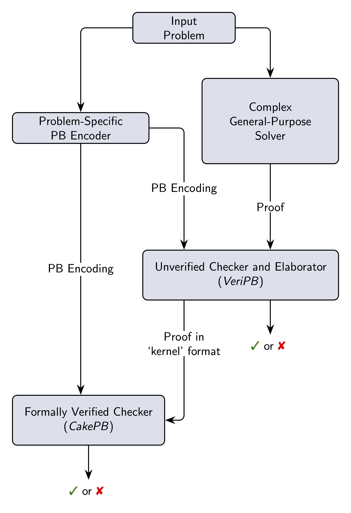

Navigation: Front Page Proof Format Overview Publications
VeriPB lets you trust that algorithms are giving the correct answer.
It is a general-purpose proof format for certificates of correctness produced by proof-logging algorithms. The underlying proof system uses pseudo-Boolean reasoning: cutting planes on 0-1 integer linear inequalities, augmented with strengthening and convenience rules. It can express and certify a range of sophisticated combinatorial solving techniques. Documentation of the format as used in the 2025 SAT competition is available here.
A number of combinatorial solvers can produce VeriPB proofs, including:
| The CaDiCaL SAT solver. | The Exact PB solver. | The Glasgow Constraint Solver |
| The Glasgow Subgraph Solver | The Pacose MaxSAT solver | The PaPILO MIP pre-solver |
| The QMaxSATpb MaxSAT solver | The RoundingSAT PB solver | The Scuttle multi-object MaxSAT solver |
Researchers working on VeriPB and associated projects have benefitted from support and hosting from many organisations, including:
A series of tutorials on VeriPB proof logging and its applications was given at WHOOPS '25
